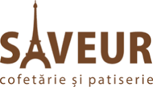

SC MIT SERV SRL · SAVEUR
Confectionery and pastry company active in the reception, storage, preparation and sale of cakes and pastries, with a steady focus on diversifying its portfolio and following new consumer trends. Its gluten-free and no-added-sugar range has brought in a new consumer segment.
- Beneficiary lead: Adina Iulia Morar
- Role: defines product requirements and production constraints, hosts the transfer
- Outcome: new high-protein gluten-free dessert under the SAVEUR brand